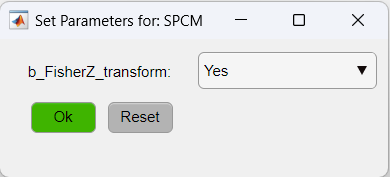

In most occasions, the raw imaging signals need to be processed in order to be properly visualized. Such processing includes steps as filtering, normalization, averaging, etc. The DataViewer app provides a portfolio of functions that cover most of the needs on mesoscale imaging data processing.
In this tutorial, we will cover the steps to apply such functions to a given recording with an basic data processing for calcium signals of a mouse brain in a resting state as an example. Since there are several different ways of processing imaging data, we cannot cover all of cases here. However, we encourage users to consult the list of available functions on our documentation for more details.
In this example, we will create a processing pipeline to create Seed-pixel correlation maps from the raw fluorescence imaging data. The raw data used here consists of ~5 min multi-channel (fluorescence and reflectance) recordings of an awake mouse expressing GCaMP6 calcium indicator in cortical neurons. Here is the analysis workflow that we will create and apply to this data:
To create the above pipeline, first, we will open the raw fluorescence data in DataViewer:
Now, to create a new processing pipeline launch the Pipeline Configuration tool. To do so, go to Utilities → Data Processing.
In the Pipeline Configuration app, we will build the processing pipeline by selecting the functions from the
Available functions list and adding them to the new pipeline by clicking on the  button in the execution order. In our case, the
pipeline will look like so:
button in the execution order. In our case, the
pipeline will look like so:
The exclamation point (!) shown before the function's name, indicate that the given function has optional parameters that can be customized.
To access the parameters, click on the function's button (red buttons in the figure above). In this particular case, we will change the parameters of two functions: normalizeLPF and SPCM. For the normalizeLPF function, we will change the frequency cut-off values to filter our data between 0.3 and 3 Hz and we set the Normalize parameter to Yes to normalize the data as ΔF/F:

As for the SPCM function, we will apply the Z-Fisher transformation of the correlation data as:
Note
A data process pipeline does not automatically save the resulting data from the pipeline. It will be stored
in RAM. If you want to save output of any of the steps, right-click on the function's button (red/green
buttons in the pipeline workflow window) and click on "Save file...".
Tip Here, you can save the pipeline with the customized parameters for later use. To do so, just click on the Save button.
The pipeline is ready to be applied! Here is a summary of the steps:
Finally, click on the green button Run! to execute the pipeline.
The resulting data is a Seed-pixel correlation map. Click on the seed pixel to update the map:
Note
The data is kept in the RAM. So, to save the processed data to a .dat file, go to File → Save as....